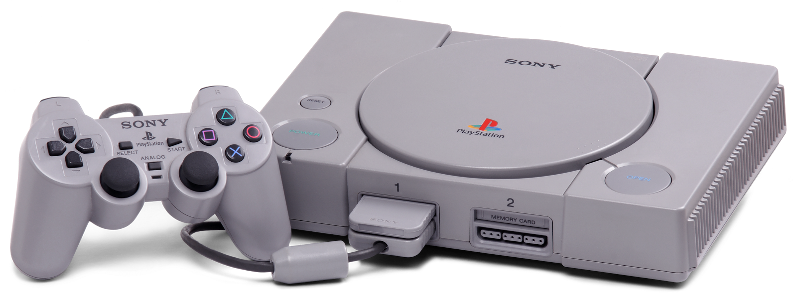
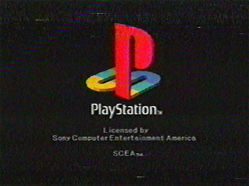

O PlayStation (プレイステーション, Pureisutēshon?, oficialmente abreviado PS), frequentemente chamado de PlayStation 1 ou ainda PSOne, foi o primeiro console de vídeo game fabricado pela Sony, lançado em 3 de dezembro de 1994 no Japão, 9 de setembro de 1995 nos Estados Unidos e em 29 de setembro de 1995 na Europa. Desde o seu lançamento até 2006, quando sua produção foi cancelada, o PlayStation vendeu mais de 100 milhões de unidades. Ocupa a posição de segundo console de mesa mais vendido no mundo, com mais de cem milhões de unidades vendidas, superado apenas pelo seu sucessor, o PlayStation 2, que teve mais de 150 milhões de unidades comercializadas.
A origem do PlayStation remonta a 1988, quando a Nintendo planejava uma expansão de CD-ROM para o Super Nintendo. A Sony, que já havia desenvolvido o chip de som do SNES, foi escolhida para desenvolver a expansão. Durante o projeto as duas empresas entraram em desacordo. A Sony queria uma porcentagem das vendas do aparelho (renomeado para Play Station) e dos jogos mas a Nintendo não aceitou. Em seguida a Nintendo anunciaria uma nova parceria com a Philips, desfazendo o contrato com a Sony.
O “Play Station X” já se encontrava em avançado estágio de desenvolvimento e não foi difícil para o engenheiro chefe da Sony, Ken Kutaragi, convencê-la a terminar o projeto e lançá-lo no mercado como um videogame independente. Assim, ele foi lançado no final de 1994, no Japão, totalmente remodelado e sem nenhum laço com a Nintendo. O console ainda recebeu massivo apoio da EA e sua linha esportiva EA Sports.
Vários jogos contribuíram para o sucesso do console, como Clock Tower, Resident Evil, Parasite Eve, Silent Hill, Gex, Rayman, Crash Bandicoot, Spyro the Dragon, Megaman X4, Tomb Raider, Medal of Honor, Dino Crisis, Tekken, Gran Turismo, Twisted Metal, Final Fantasy, Winning Eleven, Syphon Filter entre outros.
O PlayStation popularizou um acessório que, embora já existente em outros consoles (NEO-GEO, por exemplo), não havia ganhado vida plena: o Memory Card. O cartão de memória permitia salvar dados dos jogos e o progresso do usuário no jogo para continuar do ponto em que parou.
Mesmo com a chegada de concorrentes mais poderosos como Nintendo 64, Sega Saturn e o Dreamcast, o PlayStation continuava sendo o console mais vendido e com uma extensa biblioteca de jogos de grande sucesso. O sucesso da marca Playstation havia se estabelecido.
Em meados de 2000, o PlayStation foi redesenhado, ficando menor e com curvas arredondadas. Esse modelo recebeu o nome de PSOne, agora na cor branca. Nesse mesmo ano também foi lançado o sucessor PlayStation 2.
O PlayStation foi sendo abandonado aos poucos e teve sua produção encerrada em 2006 com a incrível marca de mais de 100 milhões de unidades vendidas em todo mundo. Foi o console mais vendido da 5° geração, superando Sega Saturn e Nintendo 64.
O joystick do PlayStation, que implantou um design completamente inovador e bastante ergonômico, graças às duas saliências inferiores para melhor empunhadura das mãos, veio a se tornar quase um molde para controles de plataformas futuras (de fato, para os PS seguintes o formato permaneceu inalterado enquanto que para a maioria das outras plataformas o desenho foi tomado como base). Teve, contudo, ao que parece, um elemento de inspiração no controle do SNES: botões na parte superior (os chamados L e R); mas, como melhoria ao recurso, a manete da Sony implementou quatro botões no topo (L1, L2, R1 e R2).
Em 1997, após colocar o console na liderança, a Sony decidiu lançar um upgrade para o joystick do aparelho: o DualShock, que introduziu duas mini-alavancas analógicas, além de um sistema rumble, recurso que fazia o dispositivo vibrar nas mãos do jogador de acordo com o que acontecia nos jogos. Controles analógicos (entradas de dados não-digitais). Contudo, a partir do controle DualShock do PlayStation, a possibilidade de movimentos de intensidade variável - por exemplo, o esterçar de volante em um carro ou a própria intensidade de aceleração e frenagem em um jogo de corrida - foi possível em jogos rodados em TVs.
O console PlayStation deu início a uma linha de sucessores, sob a marca PlayStation. Seu primeiro sucessor, o PlayStation 2 (PS2) foi lançado em 2000 com a promessa de revolucionar o ambiente doméstico, pois possuia a capacidade de tocar filmes em DVD e competir com os modernos jogos de computador 3D. Graças à grande e variada biblioteca de jogos e a capacidade de também rodar jogos do PlayStation, o PS2 vendeu mais de 157 milhões de unidades em 10 anos de historia, tornando-se o videogame console mais vendido da história.
Em 2005, a Sony lança o PlayStation Portable (PSP), aparelho portátil voltado para o público adulto, capaz de reproduzir filmes, visualizar imagens de câmaras digitais, tocar músicas no formato MP3, além de, é claro, rodar jogos de alto padrão em qualquer lugar com ajuda de uma bateria recarregável. A qualidade dos jogos (gráficos) está próxima à do PlayStation 2, junto a seu sucessor em 2011 PlayStation Vita PS Vita que apresenta gráficos melhores que o PS2,e usando varias novas tecnologias como uma tela de 5 polegadas sensível ao toque e tambem um recurso chamado realidade aumentada nunca antes presente em consoles.
Em 2006, o PlayStation 3 entra no mercado, carregado com recursos avançados do chip Cell e dotado de um leitor de discos Blu-Ray - formato de disco sucessor do DVD. Por conter tecnologias muito avançadas, o console foi lançado a um preço alto, em duas versões: uma de U$499 (20GB) e outra de U$599 (60GB). Em 2007, o PlayStation 3 de 80GB (U$499) e o de 40GB (U$399) foram lançados. Atualmente, o mínimo de capacidade de armazenamento é de 120GB, indo até 500GB, além de serem comercializadas apenas versões "Slim". A exemplo do PlayStation 2 quanto à compatibilidade com o PS1, os primeiros modelos de PS3 podiam reproduzir jogos do PS1 e PS2, mas a função de reprodução de jogos de PS2 (que era executada por emulação em alguns modelos e por hardware em outros) foi removida de unidades posteriores (apesar disto, há, hoje, na PlayStation Store, alguns jogos de PS2 para serem jogados em qualquer PS3).
Atualmente, a Sony disponibiliza atualizações periódicas para os sistemas operacionais de todos os seus aparelhos (exceto PS1 e PS2).
PlayStation 1
Tela de Entreda